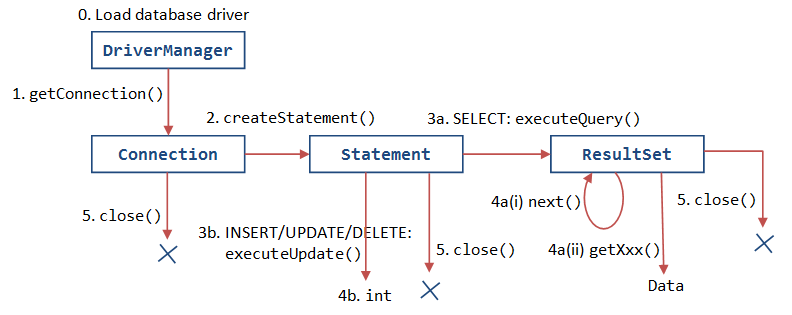

Relational Database and and Structure Query Language (SQL)
I presume that you have some knowledge on Relational Databases and the SQL language. Otherwise, read "Introduction to Relational Database and SQL".
Setting-up MySQL
In this section, I shall describe the MySQL relational database system. For other database systems, read "Other Databases".
Install the MySQL (read "How to Set Up MySQL and Get Started"). I shall assume that MySQL server is running on the default port number 3306.
On MySQL, instead of using the "mysql" interactive client program provided, you can write your own client program (in Java or other languages) to access the MySQL server. Your client program shall connect to the database server at the given IP address and TCP port number, issue the SQL commands, and process the results received.
Install JDK and Programming Editor
Before you proceed, I shall assume that you are familiar with Java Programming and have installed the followings:
- JDK (Read "How to install JDK and Get Started").
- A programming text editor, such as TextPad, Notepad++ for Windows (Read "Programming Editor"), or jEdit, gEdit for Mac (Read "Programming Editor for Mac").
Install MySQL JDBC Driver (Don't MISS This Step!)
You need to install an appropriate JDBC (Java Database Connectivity) driver to run your Java database programs. The MySQL's JDBC driver is called "MySQL Connector/J" and is available at MySQL mother site.
For Windows
- Download the latest MySQL JDBC driver from http://dev.mysql.com/downloads ⇒ "MySQL Connectors" ⇒ "Connector/J" ⇒ Connector/J 5.1.{xx} ⇒ select "Platform Independent" ⇒ ZIP Archive (e.g., "
mysql-connector-java-5.1.{xx}.zip", where{xx}is the latest release number). - UNZIP the download file into a temporary folder.
- From the temporary folder, COPY the JAR file "
mysql-connector-java-5.1.{xx}-bin.jar" to your JDK's Extension Directory at "<JAVA_HOME>\jre\lib\ext" (where<JAVA_HOME>is the JDK installed directory), e.g., "c:\program files\java\jdk1.8.0_{xx}\jre\lib\ext".
For Mac OS X
- Download the latest MySQL JDBC driver from http://www.mysql.com/downloads ⇒ MySQL Connectors ⇒ Connector/J ⇒ Connector/J 5.1.{xx} ⇒ select "Platform Independent" ⇒ Compressed TAR Archive (e.g.,
mysql-connector-java-5.1.{xx}.tar.gz, where{xx}is the latest release number). - Double-click on the downloaded TAR file to expand into folder "
mysql-connector-java-5.1.{xx}". - Open the expanded folder. COPY the JAR file "
mysql-connector-java-5.1.{xx}-bin.jar" to JDK's extension directory at "/Library/Java/Extensions" (to goto that folder, from "Finder" ⇒ GO ⇒ Go to Folder ⇒ Type "/Library/Java/Extensions").
(For Advanced User Only) You can compile Java database programs without the JDBC driver. But to run the JDBC programs, the JDBC driver's JAR-file must be included in the environment variable CLASSPATH, or the JDK's extension directory, or in the java's command-line option -cp <paths>. For example,
// For windows > java -cp .;/path/to/mysql-connector-java-5.1.{xx}-bin.jar JDBCClassToBeRun // For Macs/Unixes > java -cp .:/path/to/mysql-connector-java-5.1.{xx}-bin.jar JDBCClassToBeRun
Setup Database
We have to set up a database before embarking on our database programming. We shall call our database "ebookshop" which contains a table called "books", with 5 columns, as below:
Database: ebookshop Table: books +-------+----------------------------+---------------+---------+-------+ | id | title | author | price | qty | | (INT) | (VARCHAR(50)) | (VARCHAR(50)) | (FLOAT) | (INT) | +-------+----------------------------+---------------+---------+-------+ | 1001 | Java for dummies | Tan Ah Teck | 11.11 | 11 | | 1002 | More Java for dummies | Tan Ah Teck | 22.22 | 22 | | 1003 | More Java for more dummies | Mohammad Ali | 33.33 | 33 | | 1004 | A Cup of Java | Kumar | 44.44 | 44 | | 1005 | A Teaspoon of Java | Kevin Jones | 55.55 | 55 | +-------+----------------------------+---------------+---------+-------+
Start MySQL Server: Start the MySQL server and verify the server's TCP port number from the console messages.
// For Windows cd {path-to-mysql-bin} // Check your MySQL installed directory mysqld --console // For Mac OS X // Use graphical control at "System Preferences" -> MySQL
Start a MySQL client: I shall also assume that there is an authorized user called "myuser" with password "xxxx".
// For Windows cd {path-to-mysql-bin} // Check your MySQL installed directory mysql -u myuser -p // For Mac OS X cd /usr/local/mysql/bin ./mysql -u myuser -p
Run the following SQL statements to create our test database and table.
create database if not exists ebookshop; use ebookshop; drop table if exists books; create table books ( id int, title varchar(50), author varchar(50), price float, qty int, primary key (id)); insert into books values (1001, 'Java for dummies', 'Tan Ah Teck', 11.11, 11); insert into books values (1002, 'More Java for dummies', 'Tan Ah Teck', 22.22, 22); insert into books values (1003, 'More Java for more dummies', 'Mohammad Ali', 33.33, 33); insert into books values (1004, 'A Cup of Java', 'Kumar', 44.44, 44); insert into books values (1005, 'A Teaspoon of Java', 'Kevin Jones', 55.55, 55); select * from books;
Introduction to JDBC Programming by Examples
A JDBC (Java Database Connectivity) program comprises the following steps:
- Allocate a
Connectionobject, for connecting to the database. - Allocate a
Statementobject, under theConnectionobject created. - Write a SQL query and execute the query, via the
StatementandConnectioncreated. - Process the query result.
- Close the
StatementandConnectionobject to free up the resources.
We shall illustrate Java Database programming by the following examples.
IMPORTANT: The following examples require JDK 1.7 and above to run. If you JDK is below 1.7, upgrade your JDK (See JDK How-to)! You can check your JDK version via command "javac -version".
Example 1: SQL SELECT
Try out the following JDBC program (requires JDK 7), which issues an SQL SELECT. Take note that the source filename must be the same as the classname, with extension of ".java". Save the program in any directory of your choice (e.g., d:/myproject).
1 2 3 4 5 6 7 8 9 10 11 12 13 14 15 16 17 18 19 20 21 22 23 24 25 26 27 28 29 30 31 32 33 34 35 36 37 38 39 40 |
import java.sql.*; // Use classes in java.sql package // JDK 7 and above public class JdbcSelectTest { // Save as "JdbcSelectTest.java" public static void main(String[] args) { try ( // Step 1: Allocate a database "Connection" object Connection conn = DriverManager.getConnection( "jdbc:mysql://localhost:3306/ebookshop?useSSL=false", "myuser", "xxxx"); // MySQL // Step 2: Allocate a "Statement" object in the Connection Statement stmt = conn.createStatement(); ) { // Step 3: Execute a SQL SELECT query, the query result // is returned in a "ResultSet" object. String strSelect = "select title, price, qty from books"; System.out.println("The SQL query is: " + strSelect); // Echo For debugging System.out.println(); ResultSet rset = stmt.executeQuery(strSelect); // Step 4: Process the ResultSet by scrolling the cursor forward via next(). // For each row, retrieve the contents of the cells with getXxx(columnName). System.out.println("The records selected are:"); int rowCount = 0; while(rset.next()) { // Move the cursor to the next row String title = rset.getString("title"); double price = rset.getDouble("price"); int qty = rset.getInt("qty"); System.out.println(title + ", " + price + ", " + qty); ++rowCount; } System.out.println("Total number of records = " + rowCount); } catch(SQLException ex) { ex.printStackTrace(); } // Step 5: Close the resources - Done automatically by try-with-resources } } |
Compile: To compile the program:
cd {path-to-the-java-source-file}
javac JdbcSelectTest.java
Run: To run the program:
java JdbcSelectTest
(Skip Unless...) Read "Common Errors in JDBC Programming on MySQL".
Dissecting the Program
- The JDBC operations are carried out through the "
Connection", "Statement" and "ResultSet" objects (defined in packagejava.sql). However, you need not know the details, but merely the public methods defined in the API (Application Program Interface). You also need not re-invent the wheels by creating these classes yourself (which will take you many years?!). "Re-using" software component is a main strength of OOP. - Notice that there is little programming involved in using JDBC programming. You only have to specify the database-URL, write the SQL query, and process the query result. The rest of the codes are kind of "standard JDBC program template". Again, this is because the wheels have been invented.
- In Line 7, we allocate a
Connectionobject (calledconn) viastaticmethodDriverManager.getConnection(database-url, db-user, password). The Java program uses a so-called database-URL to connect to the server:- For MySQL:
// Syntax Connection conn = DriverManager.getConnection("jdbc:mysql://localhost:{port}/{db-name}", "{db-user}", "{password}"); // Example Connection conn = DriverManager.getConnection("jdbc:mysql://localhost:3306/ebooksop", "myuser", "xxxx");
Thedatabase-urlis in the form of "jdbc:mysql://{host}:{port}/{database-name}", with protocoljdbcand sub-protocolmysql. Theportspecifies the MySQL server's TCP port number;db-user/passwordis an authorized MySQL user. In our example,"localhost" (with special IP address of127.0.0.1) is the hostname for local loop-back;"3306" is the server's TCP port number, andebookshopis the database name. - Others: Read "Other Databases".
- For MySQL:
- In Line 13, we allocate a
Statementobject (calledstmt) within theConnectionviaconn.createStatement(). - To execute a SQL SELECT, we invoke method
stmt.executeQuery("SELECT ..."). It returns the query result in aResultSetobject (calledrset).ResultSetmodels the returned table, which can be access via a row cursor. The cursor initially positions before the first row in theResultSet.rset.next()moves the cursor to the first row. You can then userset.getXxx(columnName)to retrieve the value of a column for that row, whereXxxcorresponds to the type of the column, such asint,float,doubleandString. Therset.next()returnsfalseat the last row, which terminates the while-loop. - You may use
rset.getString(columnName)to retrieve all types (int,double, etc). - For maximum portability,
ResultSetcolumns within each row should be read in left-to-right order, and each column should be read only once via thegetXxx()methods. IssuegetXxx()to a cell more than once may trigger a strange error. - In this example, we use JDK 7's new feature called try-with-resources, which automatically closes all the opened resources in the try-clause, in our case, the
ConnectionandStatement.
Exercises: Modify your Java program to issue the following SELECT statements and display all the columns retrieved. Make sure you modify the ResultSet processing to process only the columns retrieved (otherwise, you will get a "Column not found" error).
SELECT * FROM booksSELECT title, author, price, qty FROM books WHERE author = 'Tan Ah Teck' OR price >= 30 ORDER BY price DESC, id ASC
Example 2: SQL UPDATE
To execute a SQL UPDATE, you have to invoke the method executeUpdate() of the Statement object, which returns an int indicating the number of records affected. Recall that for SELECT, we use executeQuery(), which returns a ResultSet object modeling the returned table. UPDATE|INSERT|DELETE does not return a table, but an int indicating the number of records affected.
1 2 3 4 5 6 7 8 9 10 11 12 13 14 15 16 17 18 19 20 21 22 23 24 25 26 27 28 29 30 31 32 33 34 35 36 37 38 |
import java.sql.*; // Use classes in java.sql package // JDK 7 and above public class JdbcUpdateTest { // Save as "JdbcUpdateTest.java" public static void main(String[] args) { try ( // Step 1: Allocate a database "Connection" object Connection conn = DriverManager.getConnection( "jdbc:mysql://localhost:3306/ebookshop?useSSL=false", "myuser", "xxxx"); // MySQL // Step 2: Allocate a "Statement" object in the Connection Statement stmt = conn.createStatement(); ) { // Step 3 & 4: Execute a SQL UPDATE via executeUpdate() // which returns an int indicating the number of rows affected. // Increase the price by 7% and qty by 1 for id=1001 String strUpdate = "update books set price = price*0.7, qty = qty+1 where id = 1001"; System.out.println("The SQL query is: " + strUpdate); // Echo for debugging int countUpdated = stmt.executeUpdate(strUpdate); System.out.println(countUpdated + " records affected."); // Step 3 & 4: Issue a SELECT to check the UPDATE. String strSelect = "select * from books where id = 1001"; System.out.println("The SQL query is: " + strSelect); // Echo for debugging ResultSet rset = stmt.executeQuery(strSelect); while(rset.next()) { // Move the cursor to the next row System.out.println(rset.getInt("id") + ", " + rset.getString("author") + ", " + rset.getString("title") + ", " + rset.getDouble("price") + ", " + rset.getInt("qty")); } } catch(SQLException ex) { ex.printStackTrace(); } // Step 5: Close the resources - Done automatically by try-with-resources } } |
Exercises: Modify your Java program to issue the following SQL statements:
- Increase the
priceby 50% for "A Cup of Java". - Set the
qtyto 0 for "A Teaspoon of Java".
Example 3: SQL INSERT and DELETE
Similarly, use the executeUpdate() to execute INSERT INTO and DELETE FROM. The method returns an int indicating the number of records affected.
1 2 3 4 5 6 7 8 9 10 11 12 13 14 15 16 17 18 19 20 21 22 23 24 25 26 27 28 29 30 31 32 33 34 35 36 37 38 39 40 41 42 43 44 45 46 47 48 49 50 51 52 53 54 55 56 57 58 59 60 61 |
import java.sql.*; // Use classes in java.sql package // JDK 7 and above public class JdbcInsertTest { // Save as "JdbcUpdateTest.java" public static void main(String[] args) { try ( // Step 1: Allocate a database "Connection" object Connection conn = DriverManager.getConnection( "jdbc:mysql://localhost:3306/ebookshop?useSSL=false", "myuser", "xxxx"); // MySQL // Step 2: Allocate a "Statement" object in the Connection Statement stmt = conn.createStatement(); ) { // Step 3 & 4: Execute a SQL INSERT|DELETE statement via executeUpdate(), // which returns an int indicating the number of rows affected. // DELETE records with id>=3000 and id<4000 String sqlDelete = "delete from books where id>=3000 and id<4000"; System.out.println("The SQL query is: " + sqlDelete); // Echo for debugging int countDeleted = stmt.executeUpdate(sqlDelete); System.out.println(countDeleted + " records deleted.\n"); // INSERT a record String sqlInsert = "insert into books " // need a space + "values (3001, 'Gone Fishing', 'Kumar', 11.11, 11)"; System.out.println("The SQL query is: " + sqlInsert); // Echo for debugging int countInserted = stmt.executeUpdate(sqlInsert); System.out.println(countInserted + " records inserted.\n"); // INSERT multiple records sqlInsert = "insert into books values " + "(3002, 'Gone Fishing 2', 'Kumar', 22.22, 22)," + "(3003, 'Gone Fishing 3', 'Kumar', 33.33, 33)"; System.out.println("The SQL query is: " + sqlInsert); // Echo for debugging countInserted = stmt.executeUpdate(sqlInsert); System.out.println(countInserted + " records inserted.\n"); // INSERT a partial record sqlInsert = "insert into books (id, title, author) " + "values (3004, 'Fishing 101', 'Kumar')"; System.out.println("The SQL query is: " + sqlInsert); // Echo for debugging countInserted = stmt.executeUpdate(sqlInsert); System.out.println(countInserted + " records inserted.\n"); // Issue a SELECT to check the changes String strSelect = "select * from books"; System.out.println("The SQL query is: " + strSelect); // Echo For debugging ResultSet rset = stmt.executeQuery(strSelect); while(rset.next()) { // Move the cursor to the next row System.out.println(rset.getInt("id") + ", " + rset.getString("author") + ", " + rset.getString("title") + ", " + rset.getDouble("price") + ", " + rset.getInt("qty")); } } catch(SQLException ex) { ex.printStackTrace(); } // Step 5: Close the resources - Done automatically by try-with-resources } } |
Notes:
- You cannot insert two records with the same primary key (i.e.,
id) value. Hence, we issue a DELETE before INSERT new records. In this way, you can re-run the program. - If you insert a partial record, the missing columns will receive their default values.
Exercise: Modify your Java program to issue the following SQL statements:
- Delete all books with id > 8000; and insert: (8001, 'Java ABC', 'Kevin Jones', 15.55, 55) and (8002, 'Java XYZ', 'Kevin Jones', 25.55, 55);
JDBC Cycle
REFERENCES & RESOURCES
- JDBC Online Tutorial @ http://download.oracle.com/javase/tutorial/jdbc/index.html.
- JDBC Home Page @ http://java.sun.com/products/jdbc/overview.html.
- JDBC API Specifications 1.2, 2.1, 3.0, and 4.0 @ http://java.sun.com/products/jdbc.
- White Fisher, et al., "JDBC API Tutorial and Reference", 3rd eds, Addison Wesley, 2003.
- MySQL Home Page @ http://www.mysql.org, and documentation.
- MySQL 5.5 Reference Manual @ http://dev.mysql.com/doc/refman/5.5/en/index.html.
- SQL.org @ http://www.sql.org.
- Russell Dyer, "MySQL in a Nutshell", O'Reilly, 2008.